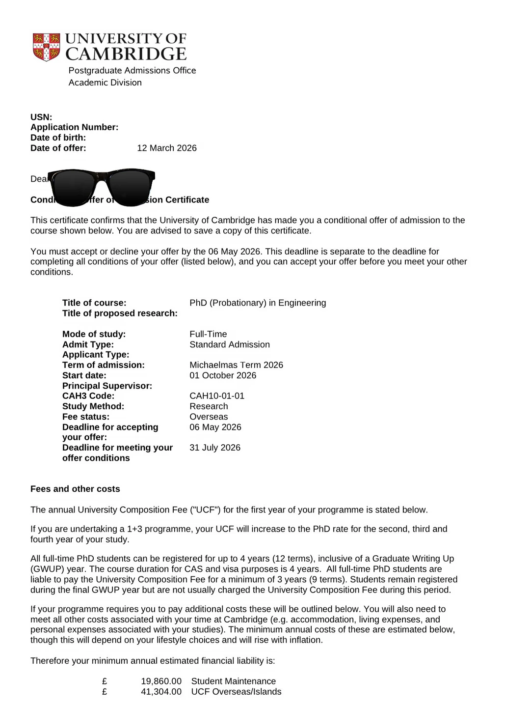

QS 11香港大学原站演示
REPUTATION
品牌口碑与录取参考样本
用学生背景、方向与 Offer 材料，展示不同申请路径。全部为原站参考演示。
 原站演示 · 非派桥业绩
原站演示 · 非派桥业绩
原站演示 · 非派桥业绩 原站演示 · 非派桥业绩
原站演示 · 非派桥业绩ADMISSION CASES
20 组名校硕博学生背景
点击案例查看原站参考资料与 Offer；排名为原站对应案例所示年份数据，并非最新排名。
演示案例来源：参考站公开展示。所有学生背景与录取不属于派桥留学业绩。
地区
学位
20 个参考演示案例
QS 18香港中文大学原站演示
QS 33香港科技大学原站演示
QS 10新加坡国立大学原站演示
QS 12南洋理工大学原站演示
QS 4牛津大学原站演示
QS 6剑桥大学原站演示
QS 2帝国理工学院原站演示
QS 8伦敦大学学院原站演示
QS 62伦敦政治经济学院原站演示
QS 16康奈尔大学原站演示
QS 15宾夕法尼亚大学原站演示
QS 16耶鲁大学原站演示
QS 20约翰斯霍普金斯大学原站演示
QS 30麦吉尔大学原站演示
QS 22/28墨尔本大学 + 悉尼大学原站演示
QS 19/31新南威尔士大学 + 蒙纳士大学原站演示
QS 29澳大利亚国立大学原站演示
QS 75都柏林圣三一大学原站演示
QS 67奥克兰大学原站演示
暂无符合筛选的参考案例。
OFFER WALL
Offer 截图展示墙
完整比例展示原站参考图片。点击查看可滚动大图，图片不代表派桥实际录取。
USER REVIEWS
学生与家长反馈
参考站评价区演示改写，不代表派桥用户评价。
先梳理成绩、课程和实践，再讨论目标项目与准备次序。
围绕具体项目整理个人经历，让材料中的专业动机更加清楚。
希望每个节点有清楚的安排，材料版本与准备进展能够及时同步。
RANKINGS
院校排名速查
排名仅为原站案例对应的历史信息；不作当前排名或院校推荐依据。
| 院校 | 地区 | 参考案例 | |
|---|---|---|---|
| 香港大学 | 港新 | 11 | ★ 工程学理学硕士原站演示 |
| 香港中文大学 | 港新 | 18 | ★ 法律硕士原站演示 |
| 香港科技大学 | 港新 | 33 | ★ 机械工程博士原站演示 |
| 新加坡国立大学 | 港新 | 10 | ★ 可持续性数据科学硕士原站演示 |
| 南洋理工大学 | 港新 | 12 | ★ 化工与生物科学博士原站演示 |
| 牛津大学 | 英国 | 4 | ★ 教育学硕士原站演示 |
| 剑桥大学 | 英国 | 6 | ★ 工程学博士原站演示 |
| 帝国理工学院 | 英国 | 2 | ★ 先进材料硕士原站演示 |
| 伦敦大学学院 | 英国 | 8 | ★ 城市经济开发硕士原站演示 |
| 伦敦政治经济学院 | 英国 | 62 | ★ 社会学硕士原站演示 |
| 康奈尔大学 | 美国 | 16 | ★ 运筹与信息工程硕士原站演示 |
| 宾夕法尼亚大学 | 美国 | 15 | ★ 数据科学相关工程硕士原站演示 |
| 耶鲁大学 | 美国 | 16 | ★ 计算机科学博士原站演示 |
| 约翰斯霍普金斯大学 | 美国 | 20 | ★ 生物医学工程硕士原站演示 |
| 麦吉尔大学 | 加拿大 | 30 | ★ 教育学硕士原站演示 |
| 墨尔本大学 + 悉尼大学 | 澳新 | 22/28 | ★ 商业分析方向硕士（双录取）原站演示 |
| 新南威尔士大学 + 蒙纳士大学 | 澳新 | 19/31 | ★ 商科方向硕士（双录取）原站演示 |
| 澳大利亚国立大学 | 澳新 | 29 | ★ 物理学博士原站演示 |
| 都柏林圣三一大学 | 欧洲 | 75 | ★ 数字营销策略硕士原站演示 |
| 奥克兰大学 | 澳新 | 67 | ★ 精神病学博士原站演示 |
原站排名与案例资料仅用于复刻展示，最新信息应向院校及排名发布机构核实。